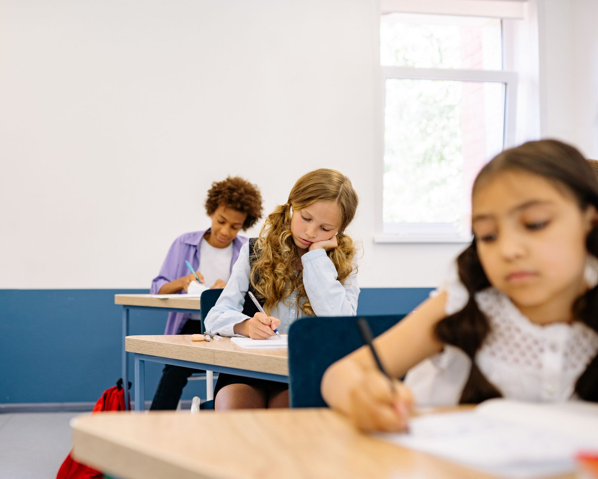

WONDERLAB • PRIMARY SCIENCE • P3-P6
Primary 3 to 6
Science tuition
in small classes
Maximum 8 students per class. Big questions deserve thoughtful teaching. At Wonderlab, we help children understand Science concepts, apply what they learn and explain their answers with clarity.
Explore Science through guided experiments linked to what pupils learn in school.

Clear understanding.
Confident explanations.
Learning Science goes beyond memorising facts. Our lessons focus on making sense of concepts, using scientific vocabulary accurately and applying knowledge to unfamiliar questions. With no more than eight students per class, there is space to ask questions and receive guidance.
Our teaching approachScience learning
for every primary level.
From the foundations in Primary 3 to PSLE preparation in Primary 6, our lessons help students build understanding progressively. Select your child’s level to see the learning focus.
Explore the
foundations.
Observe carefully and build scientific vocabulary.
02Primary 4ScienceMake new
connections.
Connect concepts and explain relationships.
03Primary 5ScienceThink deeper.
Explain clearly.
Apply ideas to more demanding questions.
04Primary 6SciencePrepare for
PSLE Science.
Consolidate concepts and practise clear explanations.
Maximum 8 students per class.
Our Primary Science teacher
Meet Mrs
Jayakody.
Our Primary Science teacher brings extensive classroom experience and a focus on conceptual understanding, critical thinking and clear scientific explanations.
Meet Mrs JayakodyGuided, hands-on learning
Science you can see
and explore.
At Wonderlab, pupils do more than read about Science. Where suitable for the topic, they take part in guided, hands-on experiments and investigations aligned with the Singapore MOE Primary Science syllabus. They observe what happens, ask questions, discuss their findings and learn to explain scientific ideas using evidence.
Take the first step
Experience a
Wonderlab Science lesson.
A trial helps you understand our teaching approach and decide whether the class is right for your child.
Visit Wonderlab
Find us at
Balmoral Plaza.
271 Bukit Timah Road,#04-03 Balmoral Plaza,
Singapore 259708Get directions to Wonderlab
Enquiries
Let’s talk about your child’s
Science learning.
Tell us your child’s level and what you would like help with. We will be in touch about programmes, class timings or a trial.
Email Wonderlab